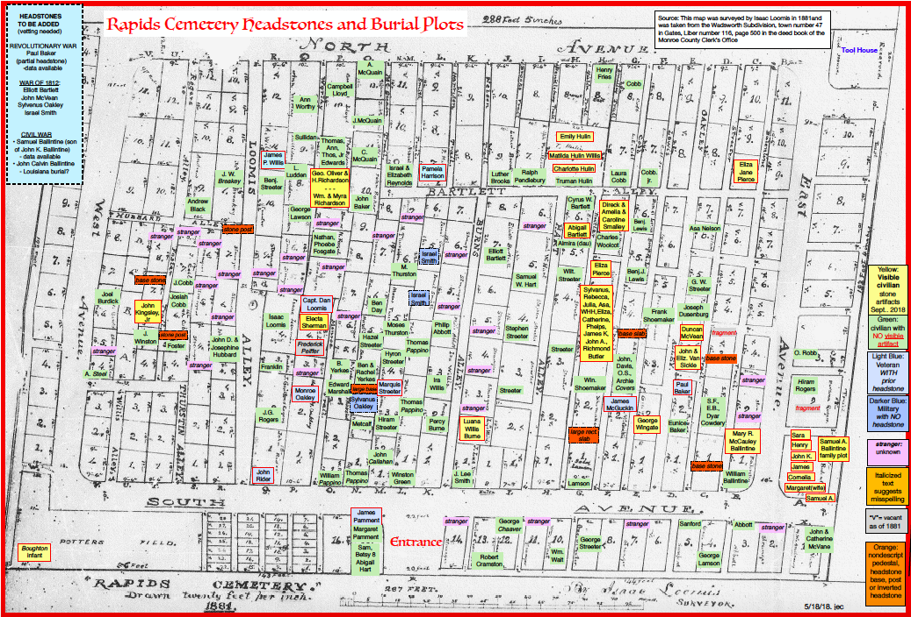

<div class="container">
  <div class="row">
    <div class="col">
      
      <p>This color-coded cemetery map is adapted from an 1881 rendition produced 
        by Isaac Loomis, an early Rochester architect buried at Rapids Cemetery. 
        It highlights military and civilian burials. It indicates burial plots that 
        have headstones and ones that do not. It remains a work-in-progress. This map 
        is not interactive. Search the List of Known Burials for further information.</p>
    </div>
  </div>
</div>